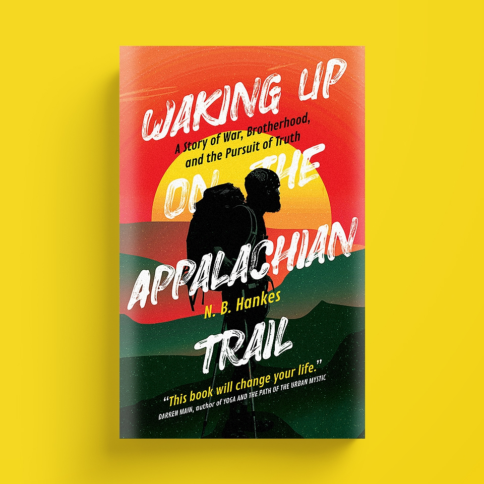

Veteran Artist Residencies
Veteran Artist Residencies is a non-profit providing paid artistic residencies to post-9/11 veteran writers.
Waking Up On the Appalachian Trail
This is Hankes' first book. It quickly became a best seller and was picked by The Progressive magazine as one of their favorite books of 2020.
About N. B. Hankes
N. B. Hankes is a writer, scholar, and combat veteran. He holds a Masters of Science in Soil and Water Chemistry from Utah State University. Hankes served in the U.S. Army from 2005-2009 as an unmanned aerial vehicle operator with the 4th Brigade, 1st Infantry Division serving in Baghdad, Iraq during the Troop Surge of 2007.